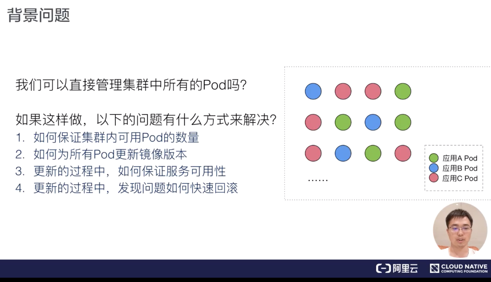
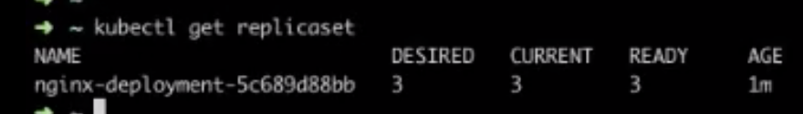
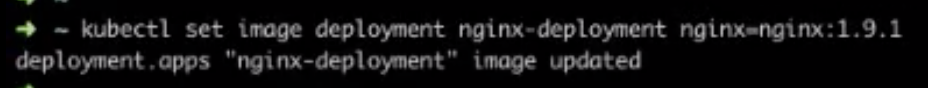
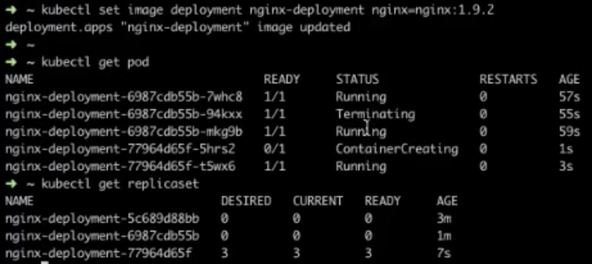
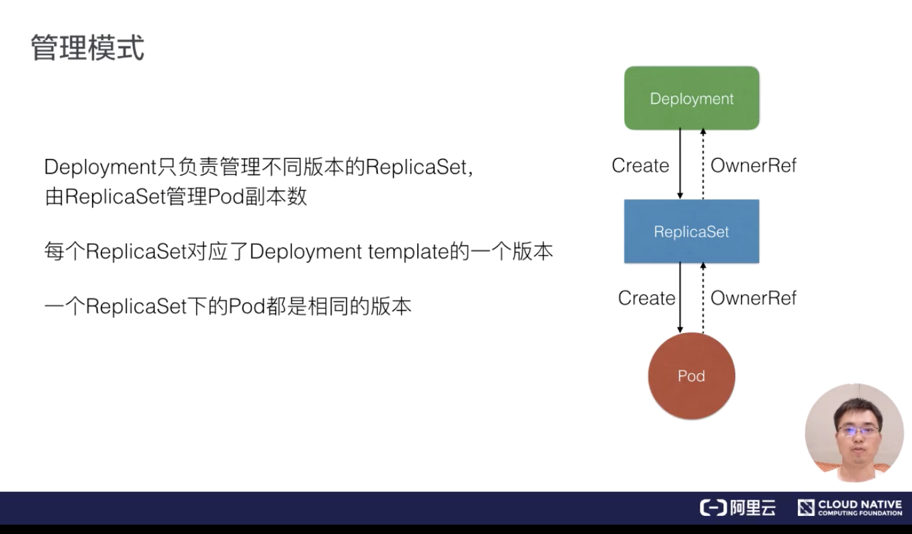
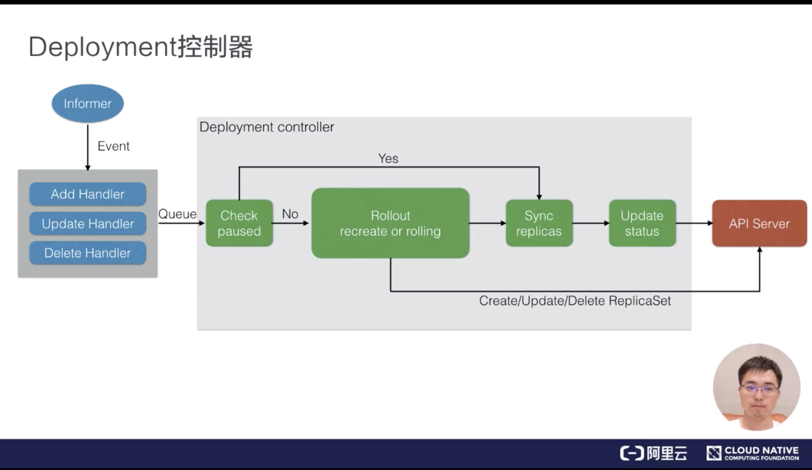
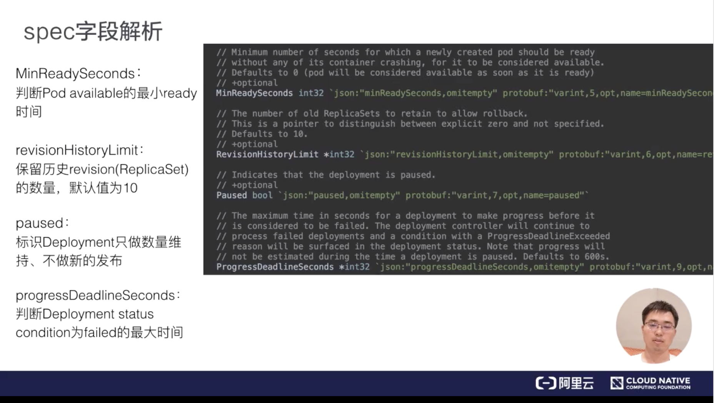

<!DOCTYPE html>

<html xmlns="http://www.w3.org/1999/xhtml">
<head>
<head>
<meta content="text/html; charset=utf-8" http-equiv="Content-Type"/>
<meta content="width=device-width, initial-scale=1, maximum-scale=1.0, user-scalable=no" name="viewport"/>
<meta content="zh-cn" http-equiv="content-language"/>
<meta content="06 应用编排与管理" name="description"/>
<link href="/static/favicon.png" rel="icon"/>
<title>06 应用编排与管理 </title>
<link href="/static/index.css" rel="stylesheet"/>
<link href="/static/highlight.min.css" rel="stylesheet"/>
<script src="/static/highlight.min.js"></script>
<meta content="Hexo 4.2.0" name="generator"/>
<script data-website-id="83e5d5db-9d06-40e3-b780-cbae722fdf8c" defer="" src="https://umami.lianglianglee.com/script.js"></script>
</head>
<body>
<div class="book-container">
<div class="book-sidebar">
<div class="book-brand">
<a href="/">

<span>技术文章摘抄</span>
</a>
</div>
<div class="book-menu uncollapsible">
<ul class="uncollapsible">
<li><a class="current-tab" href="/">首页</a></li>
<li><a href="../">上一级</a></li>
</ul>
<ul class="uncollapsible">
<li>
<a class="menu-item" href="/%e4%b8%93%e6%a0%8f/CNCF%20X%20%e9%98%bf%e9%87%8c%e5%b7%b4%e5%b7%b4%e4%ba%91%e5%8e%9f%e7%94%9f%e6%8a%80%e6%9c%af%e5%85%ac%e5%bc%80%e8%af%be/01%20%e7%ac%ac%e4%b8%80%e5%a0%82%e2%80%9c%e4%ba%91%e5%8e%9f%e7%94%9f%e2%80%9d%e8%af%be.md.html" id="01 第一堂“云原生”课.md.html">01 第一堂“云原生”课.md.html</a>
</li>
<li>
<a class="menu-item" href="/%e4%b8%93%e6%a0%8f/CNCF%20X%20%e9%98%bf%e9%87%8c%e5%b7%b4%e5%b7%b4%e4%ba%91%e5%8e%9f%e7%94%9f%e6%8a%80%e6%9c%af%e5%85%ac%e5%bc%80%e8%af%be/02%20%e5%ae%b9%e5%99%a8%e5%9f%ba%e6%9c%ac%e6%a6%82%e5%bf%b5.md.html" id="02 容器基本概念.md.html">02 容器基本概念.md.html</a>
</li>
<li>
<a class="menu-item" href="/%e4%b8%93%e6%a0%8f/CNCF%20X%20%e9%98%bf%e9%87%8c%e5%b7%b4%e5%b7%b4%e4%ba%91%e5%8e%9f%e7%94%9f%e6%8a%80%e6%9c%af%e5%85%ac%e5%bc%80%e8%af%be/03%20Kubernetes%20%e6%a0%b8%e5%bf%83%e6%a6%82%e5%bf%b5.md.html" id="03 Kubernetes 核心概念.md.html">03 Kubernetes 核心概念.md.html</a>
</li>
<li>
<a class="menu-item" href="/%e4%b8%93%e6%a0%8f/CNCF%20X%20%e9%98%bf%e9%87%8c%e5%b7%b4%e5%b7%b4%e4%ba%91%e5%8e%9f%e7%94%9f%e6%8a%80%e6%9c%af%e5%85%ac%e5%bc%80%e8%af%be/04%20%e7%90%86%e8%a7%a3%20Pod%20%e5%92%8c%e5%ae%b9%e5%99%a8%e8%ae%be%e8%ae%a1%e6%a8%a1%e5%bc%8f.md.html" id="04 理解 Pod 和容器设计模式.md.html">04 理解 Pod 和容器设计模式.md.html</a>
</li>
<li>
<a class="menu-item" href="/%e4%b8%93%e6%a0%8f/CNCF%20X%20%e9%98%bf%e9%87%8c%e5%b7%b4%e5%b7%b4%e4%ba%91%e5%8e%9f%e7%94%9f%e6%8a%80%e6%9c%af%e5%85%ac%e5%bc%80%e8%af%be/05%20%e5%ba%94%e7%94%a8%e7%bc%96%e6%8e%92%e4%b8%8e%e7%ae%a1%e7%90%86%ef%bc%9a%e6%a0%b8%e5%bf%83%e5%8e%9f%e7%90%86.md.html" id="05 应用编排与管理：核心原理.md.html">05 应用编排与管理：核心原理.md.html</a>
</li>
<li>
<a class="menu-item" href="/%e4%b8%93%e6%a0%8f/CNCF%20X%20%e9%98%bf%e9%87%8c%e5%b7%b4%e5%b7%b4%e4%ba%91%e5%8e%9f%e7%94%9f%e6%8a%80%e6%9c%af%e5%85%ac%e5%bc%80%e8%af%be/06%20%e5%ba%94%e7%94%a8%e7%bc%96%e6%8e%92%e4%b8%8e%e7%ae%a1%e7%90%86.md.html" id="06 应用编排与管理.md.html">06 应用编排与管理.md.html</a>
</li>
<li>
<a class="menu-item" href="/%e4%b8%93%e6%a0%8f/CNCF%20X%20%e9%98%bf%e9%87%8c%e5%b7%b4%e5%b7%b4%e4%ba%91%e5%8e%9f%e7%94%9f%e6%8a%80%e6%9c%af%e5%85%ac%e5%bc%80%e8%af%be/07%20%e5%ba%94%e7%94%a8%e7%bc%96%e6%8e%92%e4%b8%8e%e7%ae%a1%e7%90%86%ef%bc%9aJob%20&amp;%20DaemonSet.md.html" id="07 应用编排与管理：Job &amp; DaemonSet.md.html">07 应用编排与管理：Job &amp; DaemonSet.md.html</a>
</li>
<li>
<a class="menu-item" href="/%e4%b8%93%e6%a0%8f/CNCF%20X%20%e9%98%bf%e9%87%8c%e5%b7%b4%e5%b7%b4%e4%ba%91%e5%8e%9f%e7%94%9f%e6%8a%80%e6%9c%af%e5%85%ac%e5%bc%80%e8%af%be/08%20%e5%ba%94%e7%94%a8%e9%85%8d%e7%bd%ae%e7%ae%a1%e7%90%86.md.html" id="08 应用配置管理.md.html">08 应用配置管理.md.html</a>
</li>
<li>
<a class="menu-item" href="/%e4%b8%93%e6%a0%8f/CNCF%20X%20%e9%98%bf%e9%87%8c%e5%b7%b4%e5%b7%b4%e4%ba%91%e5%8e%9f%e7%94%9f%e6%8a%80%e6%9c%af%e5%85%ac%e5%bc%80%e8%af%be/09%20%e5%ba%94%e7%94%a8%e5%ad%98%e5%82%a8%e5%92%8c%e6%8c%81%e4%b9%85%e5%8c%96%e6%95%b0%e6%8d%ae%e5%8d%b7%ef%bc%9a%e6%a0%b8%e5%bf%83%e7%9f%a5%e8%af%86.md.html" id="09 应用存储和持久化数据卷：核心知识.md.html">09 应用存储和持久化数据卷：核心知识.md.html</a>
</li>
<li>
<a class="menu-item" href="/%e4%b8%93%e6%a0%8f/CNCF%20X%20%e9%98%bf%e9%87%8c%e5%b7%b4%e5%b7%b4%e4%ba%91%e5%8e%9f%e7%94%9f%e6%8a%80%e6%9c%af%e5%85%ac%e5%bc%80%e8%af%be/10%20%e5%ba%94%e7%94%a8%e5%ad%98%e5%82%a8%e5%92%8c%e6%8c%81%e4%b9%85%e5%8c%96%e6%95%b0%e6%8d%ae%e5%8d%b7%ef%bc%9a%e5%ad%98%e5%82%a8%e5%bf%ab%e7%85%a7%e4%b8%8e%e6%8b%93%e6%89%91%e8%b0%83%e5%ba%a6%28%e8%87%b3%e5%a4%a9%29.md.html" id="10 应用存储和持久化数据卷：存储快照与拓扑调度(至天).md.html">10 应用存储和持久化数据卷：存储快照与拓扑调度(至天).md.html</a>
</li>
<li>
<a class="menu-item" href="/%e4%b8%93%e6%a0%8f/CNCF%20X%20%e9%98%bf%e9%87%8c%e5%b7%b4%e5%b7%b4%e4%ba%91%e5%8e%9f%e7%94%9f%e6%8a%80%e6%9c%af%e5%85%ac%e5%bc%80%e8%af%be/11%20%e5%8f%af%e8%a7%82%e6%b5%8b%e6%80%a7%ef%bc%9a%e4%bd%a0%e7%9a%84%e5%ba%94%e7%94%a8%e5%81%a5%e5%ba%b7%e5%90%97%ef%bc%9f%ef%bc%88%e8%8e%ab%e6%ba%90%ef%bc%89.md.html" id="11 可观测性：你的应用健康吗？（莫源）.md.html">11 可观测性：你的应用健康吗？（莫源）.md.html</a>
</li>
<li>
<a class="menu-item" href="/%e4%b8%93%e6%a0%8f/CNCF%20X%20%e9%98%bf%e9%87%8c%e5%b7%b4%e5%b7%b4%e4%ba%91%e5%8e%9f%e7%94%9f%e6%8a%80%e6%9c%af%e5%85%ac%e5%bc%80%e8%af%be/12%20%e5%8f%af%e8%a7%82%e6%b5%8b%e6%80%a7-%e7%9b%91%e6%8e%a7%e4%b8%8e%e6%97%a5%e5%bf%97%ef%bc%88%e8%8e%ab%e6%ba%90%ef%bc%89.md.html" id="12 可观测性-监控与日志（莫源）.md.html">12 可观测性-监控与日志（莫源）.md.html</a>
</li>
<li>
<a class="menu-item" href="/%e4%b8%93%e6%a0%8f/CNCF%20X%20%e9%98%bf%e9%87%8c%e5%b7%b4%e5%b7%b4%e4%ba%91%e5%8e%9f%e7%94%9f%e6%8a%80%e6%9c%af%e5%85%ac%e5%bc%80%e8%af%be/13%20Kubernetes%20%e7%bd%91%e7%bb%9c%e6%a6%82%e5%bf%b5%e5%8f%8a%e7%ad%96%e7%95%a5%e6%8e%a7%e5%88%b6%ef%bc%88%e5%8f%b6%e7%a3%8a%ef%bc%89.md.html" id="13 Kubernetes 网络概念及策略控制（叶磊）.md.html">13 Kubernetes 网络概念及策略控制（叶磊）.md.html</a>
</li>
<li>
<a class="menu-item" href="/%e4%b8%93%e6%a0%8f/CNCF%20X%20%e9%98%bf%e9%87%8c%e5%b7%b4%e5%b7%b4%e4%ba%91%e5%8e%9f%e7%94%9f%e6%8a%80%e6%9c%af%e5%85%ac%e5%bc%80%e8%af%be/14%20Kubernetes%20Service%ef%bc%88%e6%ba%aa%e6%81%92%ef%bc%89.md.html" id="14 Kubernetes Service（溪恒）.md.html">14 Kubernetes Service（溪恒）.md.html</a>
</li>
<li>
<a class="menu-item" href="/%e4%b8%93%e6%a0%8f/CNCF%20X%20%e9%98%bf%e9%87%8c%e5%b7%b4%e5%b7%b4%e4%ba%91%e5%8e%9f%e7%94%9f%e6%8a%80%e6%9c%af%e5%85%ac%e5%bc%80%e8%af%be/15%20%e4%bb%8e%200%20%e5%bc%80%e5%a7%8b%e5%88%9b%e4%bd%9c%e4%ba%91%e5%8e%9f%e7%94%9f%e5%ba%94%e7%94%a8%ef%bc%88%e6%ae%b7%e8%be%be%ef%bc%89.md.html" id="15 从 0 开始创作云原生应用（殷达）.md.html">15 从 0 开始创作云原生应用（殷达）.md.html</a>
</li>
<li>
<a class="menu-item" href="/%e4%b8%93%e6%a0%8f/CNCF%20X%20%e9%98%bf%e9%87%8c%e5%b7%b4%e5%b7%b4%e4%ba%91%e5%8e%9f%e7%94%9f%e6%8a%80%e6%9c%af%e5%85%ac%e5%bc%80%e8%af%be/16%20%e6%b7%b1%e5%85%a5%e8%a7%a3%e6%9e%90%20Linux%20%e5%ae%b9%e5%99%a8%ef%bc%88%e5%8d%8e%e6%95%8f%ef%bc%89.md.html" id="16 深入解析 Linux 容器（华敏）.md.html">16 深入解析 Linux 容器（华敏）.md.html</a>
</li>
<li><a href="/assets/捐赠.md.html">捐赠</a></li>
</ul>
</div>
</div>
<div class="sidebar-toggle" onclick="sidebar_toggle()" onmouseleave="remove_inner()" onmouseover="add_inner()">
<div class="sidebar-toggle-inner"></div>
</div>
<div class="off-canvas-content">
<div class="columns">
<div class="column col-12 col-lg-12">
<div class="book-navbar">
<header class="navbar">
<section class="navbar-section">
<a onclick="open_sidebar()">
<i class="icon icon-menu"></i>
</a>
</section>
</header>
</div>
<div class="book-content" style="max-width: 960px; margin: 0 auto;
    overflow-x: auto;
    overflow-y: hidden;">
<div class="book-post">
<div align="center">因收到Google相关通知，网站将会择期关闭。<a href="https://lumendatabase.org/notices/44265620" target="_blank">相关通知内容</a><hr/></div>
<p align="center" id="tip"></p>
<h1 class="title" data-id="06 应用编排与管理" id="title">06 应用编排与管理</h1>
<div><h2 id="需求来源">需求来源</h2>
<h3 id="背景问题">背景问题</h3>
<p>首先，我们来看一下背景问题。如下图所示：如果我们直接管理集群中所有的 Pod，应用 A、B、C 的 Pod，其实是散乱地分布在集群中。</p>
<p></p>
<p>现在有以下的问题：</p>
<ul>
<li>首先，如何保证集群内可用 Pod 的数量？也就是说我们应用 A 四个 Pod 如果出现了一些宿主机故障，或者一些网络问题，如何能保证它可用的数量？</li>
<li>如何为所有 Pod 更新镜像版本？我们是否要某一个 Pod 去重建新版本的 Pod？</li>
<li>然后在更新过程中，如何保证服务的可用性？</li>
<li>以及更新过程中，如果发现了问题，如何快速回滚到上一个版本？</li>
</ul>
<h3 id="deployment-管理部署发布的控制器">Deployment：管理部署发布的控制器</h3>
<p>这里就引入了我们今天课程的主题：Deployment 管理部署发布的控制器。</p>
<p></p>
<p>可以看到我们通过 Deployment 将应用 A、B、C 分别规划到不同的 Deployment 中，每个 Deployment 其实是管理的一组相同的应用 Pod，这组 Pod 我们认为它是相同的一个副本，那么 Deployment 能帮我们做什么事情呢？</p>
<p>首先，Deployment 定义了一种 Pod 期望数量，比如说应用 A，我们期望 Pod 数量是四个，那么这样的话，controller 就会持续维持 Pod 数量为期望的数量。当我们与 Pod 出现了网络问题或者宿主机问题的话，controller 能帮我们恢复，也就是新扩出来对应的 Pod，来保证可用的 Pod 数量与期望数量一致；</p>
<p>配置 Pod 发布方式，也就是说 controller 会按照用户给定的策略来更新 Pod，而且更新过程中，也可以设定不可用 Pod 数量在多少范围内；</p>
<p>如果更新过程中发生问题的话，即所谓“一键”回滚，也就是说你通过一条命令或者一行修改能够将 Deployment 下面所有 Pod 更新为某一个旧版本 。</p>
<h2 id="用例解读">用例解读</h2>
<h3 id="deployment-语法">Deployment 语法</h3>
<p>下面我们用一个简单的用例来解读一下如何操作 Deployment。</p>
<p></p>
<p>上图可以看到一个最简单的 Deployment 的 yaml 文件。</p>
<p>“apiVersion：apps/v1”，也就是说 Deployment 当前所属的组是 apps，版本是 v1。“metadata”是我们看到的 Deployment 元信息，也就是往期回顾中的 Labels、Selector、Pod.image，这些都是在往期中提到的知识点。</p>
<p>Deployment 作为一个 K8s 资源，它有自己的 metadata 元信息，这里我们定义的 Deployment.name 是 nginx.Deployment。Deployment.spec 中首先要有一个核心的字段，即 replicas，这里定义期望的 Pod 数量为三个；selector 其实是 Pod 选择器，那么所有扩容出来的 Pod，它的 Labels 必须匹配 selector 层上的 image.labels，也就是 app.nginx。</p>
<p>就如上面的 Pod 模板 template 中所述，这个 template 它其实包含了两部分内容：</p>
<ul>
<li>一部分是我们期望 Pod 的 metadata，其中包含了 labels，即跟 selector.matchLabels 相匹配的一个 Labels；</li>
<li>第二部分是 template 包含的一个 Pod.spec。这里 Pod.spec 其实是 Deployment 最终创建出来 Pod 的时候，它所用的 Pod.spec，这里定义了一个 container.nginx，它的镜像版本是 nginx:1.7.9。</li>
</ul>
<p>下面是遇到的新知识点：</p>
<ul>
<li>第一个是 replicas，就是 Deployment 中期望的或者终态数量；</li>
<li>第二个是 template，也就是 Pod 相关的一个模板。</li>
</ul>
<h3 id="查看-deployment-状态">查看 Deployment 状态</h3>
<p>当我们创建出一个 Deployment 的时候，可以通过 kubectl get deployment，看到 Deployment 总体的一个状态。如下图所示：</p>
<p></p>
<p>上图中可以看到：</p>
<ul>
<li><strong>DESIRED</strong>：期望的 Pod 数量是 3 个；</li>
<li><strong>CURRENT</strong>：当前实际 Pod 数量是 3 个；</li>
<li><strong>UP-TO-DATE</strong>：其实是到达最新的期望版本的 Pod 数量；</li>
<li><strong>AVAILABLE</strong>：这个其实是运行过程中可用的 Pod 数量。后面会提到，这里 AVAILABLE 并不简单是可用的，也就是 Ready 状态的，它其实包含了一些可用超过一定时间长度的 Pod；</li>
<li><strong>AGE</strong>：deployment 创建的时长，如上图 Deployment 就是已经创建了 80 分钟。</li>
</ul>
<h3 id="查看-pod">查看 Pod</h3>
<p>最后我们可以查看一下 Pod。如下图所示：</p>
<p></p>
<p>上图中有三个 Pod，Pod 名字格式我们不难看到。</p>
<p>最前面一段：nginx-deployment，其实是 Pod 所属 Deployment.name；中间一段：template-hash，这里三个 Pod 是一样的，因为这三个 Pod 其实都是同一个 template 中创建出来的。</p>
<p>最后一段，是一个 random 的字符串，我们通过 get.pod 可以看到，Pod 的 ownerReferences 即 Pod 所属的 controller 资源，并不是 Deployment，而是一个 ReplicaSet。这个 ReplicaSet 的 name，其实是 nginx-deployment 加上 pod.template-hash，后面会提到。所有的 Pod 都是 ReplicaSet 创建出来的，而 ReplicaSet 它对应的某一个具体的 Deployment.template 版本。</p>
<h3 id="更新镜像">更新镜像</h3>
<p>接下来我们可以看一下，如何对一个给定的 Deployment 更新它所有Pod的镜像版本呢？这里我们可以执行一个 kubectl 命令：</p>
<p><strong>kubectl set image deployment.v1.apps/nginx-deployment nginx=nginx:1.9.1</strong></p>
<p>首先 kubectl 后面有一个 set image 固定写法，这里指的是设定镜像；其次是一个 deployment.v1.apps，这里也是一个固定写法，写的是我们要操作的资源类型，deployment 是资源名、v1 是资源版本、apps 是资源组，这里也可以简写为 deployment 或者 deployment.apps，比如说写为 deployment 的时候，默认将使用 apps 组 v1 版本。</p>
<p>第三部分是要更新的 deployment 的 name，也就是我们的 nginx-deployment；再往后的 nginx 其实指的是 template，也就是 Pod 中的 container.name；这里我们可以注意到：一个 Pod 中，其实可能存在多个 container，而我们指定想要更新的镜像的 container.name，就是 nginx。</p>
<p>最后，指定我们这个容器期望更新的镜像版本，这里指的是 nginx: 1.9.1。如下图所示：当执行完这条命令之后，可以看到 deployment 中的 template.spec 已经更新为 nginx: 1.9.1。</p>
<p></p>
<h3 id="快速回滚">快速回滚</h3>
<p>如果我们在发布过程中遇到了问题，也支持快速回滚。通过 kubectl 执行的话，其实是“kubectl rollout undo”这个命令，可以回滚到 Deployment 上一版本；通过“rollout undo”加上“to-revision”来指定可以回滚到某一个具体的版本。</p>
<p></p>
<h3 id="deploymestatus">DeploymeStatus</h3>
<p>最后我们来看一下 DeploymeStatus。前面的课程我们学习到，每一个资源都有它的 spec.Status。这里可以看一下，deploymentStatus 中描述的三个其实是它的 conversion 状态，也就是 Processing、Complete 以及 Failed。</p>
<p></p>
<p>以 Processing 为例：Processing 指的是 Deployment 正在处于扩容和发布中。比如说 Processing 状态的 deployment，它所有的 replicas 及 Pod 副本全部达到最新版本，而且是 available，这样的话，就可以进入 complete 状态。而 complete 状态如果发生了一些扩缩容的话，也会进入 processing 这个处理工作状态。</p>
<p>如果在处理过程中遇到一些问题：比如说拉镜像失败了，或者说 readiness probe 检查失败了，就会进入 failed 状态；如果在运行过程中即 complete 状态，中间运行时发生了一些 pod readiness probe 检查失败，这个时候 deployment 也会进入 failed 状态。进入 failed 状态之后，除非所有点 replicas 均变成 available，而且是 updated 最新版本，deployment 才会重新进入 complete 状态。</p>
<h2 id="操作演示">操作演示</h2>
<h3 id="deployment-创建及状态">Deployment 创建及状态</h3>
<p>下面我们来进行操作演示：这里连接一个阿里云服务集群。我们可以看到当前集群已经有几个可用的 node。</p>
<p></p>
<p>首先创建对应的 deployment。可以看到 deployment 中的 desired、current、up-to-date 以及 available 已经都达到了可用的期望状态。</p>
<p></p>
<h3 id="deployment-的结构">Deployment 的结构</h3>
<p>这里看到 spec 中的 replicas 是三个，selector 以及 template labels中定义的标签都是 app：nginx，spec 中的 image 是我们期望的 nginx: 1.7.9；status 中的 available.replicas，readReplicas 以及 updatedReplicas 都是 3 个。</p>
<p></p>
<h3 id="pod-状态">Pod 状态</h3>
<p>我们可以再选择一个 Pod 看一下状态：</p>
<p>可以看到：Pod 中 ownerReferences 的功能是 ReplicaSet；pod.spec.container 里的镜像是 1.7.9。这个 Pod 已经是 Running 状态，而且它的 conditions.status 是“true”，表示它的服务已经可用了。</p>
<p></p>
<h3 id="更新升级">更新升级</h3>
<p>当前只有最新版本的 replicaset，那么现在尝试对 deployment 做一次升级。</p>
<p></p>
<p>“kubectl set image”这个操作命令，后面接 “deployment”，加 deployment.name，最后指定容器名，以及我们期望升级的镜像版本。</p>
<p></p>
<p>接下来我们看下 deployment 中的 template 中的 image 已经更新为 1.9.1。</p>
<p></p>
<p>这个时候我们再 get pod 看一下状态。</p>
<p></p>
<p>三个 pod 已经升级为新版本，pod 名字中的 pod-template-hash 也已更新。</p>
<p></p>
<p>可以看到：旧版本 replicaset 的 spec 数量以及 pod 数量是都是 0，新版本的 pod 数量是 3 个。</p>
<hr/>
<p>假设又做了一次更新，这个时候 get.pod 其实可以看到：当前的 pod 其实是有两个旧版本的处于 running，另一个旧版本是在删除中；而两个新版本的 pod，一个已经进入 running，一个还在 creating 中。</p>
<p>这时我们可用的 pod 数量即非删除状态的 pod 数量，其实是 4 个，已经超过了 replica 原先在 deployment 设置的数量 3 个。这个原因是我们在 deployment 中有 maxavailable 和 maxsugar 两个操作，这两个配置可以限制我们在发布过程中的一些策略。在后面架构设计中会讲到这个问题。</p>
<p>** **</p>
<h3 id="历史版本保留-revisionhistorylimit">历史版本保留 revisionHistoryLimit</h3>
<p>上图看到，我们当前最新版本的 replicaset 是 3 个 pod，另外还有两个历史版本的 replicaset，那么会不会存在一种情况：就是随着 deployment 持续的更新，这个旧版本的 replicaset 会越积越多呢？其实 deployment 提供了一个机制来避免这个问题：在 deployment spec 中，有一个 revisionHistoryLimit，它的默认值为 10，它其实保证了保留历史版本的 replicaset 的数量，我们尝试把它改为 1。</p>
<p> </p>
<p>由上面第二张图，可以看到两个 replicaset，也就是说，除了当前版本的 replicaset 之外，旧版本的 replicaset 其实只保留了一个。</p>
<h3 id="回滚">回滚</h3>
<p>最后再尝试做一下回滚。首先再来看一下 replicaset，这时发现旧版本的 replicaset 数量从 0 个增到 2 个，而新版本的 replicaset 数量从 3 个削减为 1 个，表示它已经开始在做回滚的操作。然后再观察一下， 旧版本的数量已经是 3 个，即已经回滚成功，而新版本的 pod 数量变为 0 个。</p>
<p></p>
<p>我们最后再 get pod 看一下：</p>
<p></p>
<p>这时，3 个 pod.template-hash 已经更新为旧版本的 hash，但其实这 3 个 pod 都是重新创建出来的，而并非我们在前一版本中创建的 3 个 pod。换句话说，也就是我们回滚的时候，其实是创建了 3 个旧版本的 pod，而并非把先前的 3 个 pod 找回来。</p>
<h2 id="架构设计">架构设计</h2>
<h3 id="管理模式">管理模式</h3>
<p></p>
<p>我们来看一下架构设计。首先简单看一下管理模式：Deployment 只负责管理不同版本的 ReplicaSet，由 ReplicaSet 来管理具体的 Pod 副本数，每个 ReplicaSet 对应 Deployment template 的一个版本。在上文的例子中可以看到，每一次修改 template，都会生成一个新的 ReplicaSet，这个 ReplicaSet 底下的 Pod 其实都是相同的版本。</p>
<p>如上图所示：Deployment 创建 ReplicaSet，而 ReplicaSet 创建 Pod。他们的 OwnerRef 其实都对应了其控制器的资源。</p>
<h3 id="deployment-控制器">Deployment 控制器</h3>
<p>我们先简单看一下控制器实现原理。</p>
<p>首先，我们所有的控制器都是通过 Informer 中的 Event 做一些 Handler 和 Watch。这个地方 Deployment 控制器，其实是关注 Deployment 和 ReplicaSet 中的 event，收到事件后会加入到队列中。而 Deployment controller 从队列中取出来之后，它的逻辑会判断 Check Paused，这个 Paused 其实是 Deployment 是否需要新的发布，如果 Paused 设置为 true 的话，就表示这个 Deployment 只会做一个数量上的维持，不会做新的发布。</p>
<p></p>
<p>如上图，可以看到如果 Check paused 为 Yes 也就是 true 的话，那么只会做 Sync replicas。也就是说把 replicas sync 同步到对应的 ReplicaSet 中，最后再 Update Deployment status，那么 controller 这一次的 ReplicaSet 就结束了。</p>
<p>那么如果 paused 为 false 的话，它就会做 Rollout，也就是通过 Create 或者是 Rolling 的方式来做更新，更新的方式其实也是通过 Create/Update/Delete 这种 ReplicaSet 来做实现的。</p>
<h3 id="replicaset-控制器">ReplicaSet 控制器</h3>
<p></p>
<p>当 Deployment 分配 ReplicaSet 之后，ReplicaSet 控制器本身也是从 Informer 中 watch 一些事件，这些事件包含了 ReplicaSet 和 Pod 的事件。从队列中取出之后，ReplicaSet controller 的逻辑很简单，就只管理副本数。也就是说如果 controller 发现 replicas 比 Pod 数量大的话，就会扩容，而如果发现实际数量超过期望数量的话，就会删除 Pod。</p>
<p>上面 Deployment 控制器的图中可以看到，Deployment 控制器其实做了更复杂的事情，包含了版本管理，而它把每一个版本下的数量维持工作交给 ReplicaSet 来做。</p>
<h3 id="扩-缩容模拟">扩/缩容模拟</h3>
<p>下面来看一些操作模拟，比如说扩容模拟。这里有一个 Deployment，它的副本数是 2，对应的 ReplicaSet 有 Pod1 和 Pod2。这时如果我们修改 Deployment replicas， controller 就会把 replicas 同步到当前版本的 ReplicaSet 中，这个 ReplicaSet 发现当前有 2 个 Pod，不满足当前期望 3 个，就会创建一个新的 Pod3。</p>
<p></p>
<h3 id="发布模拟">发布模拟</h3>
<p>我们再模拟一下发布，发布的情况会稍微复杂一点。这里可以看到 Deployment 当前初始的 template，比如说 template1 这个版本。template1 这个 ReplicaSet 对应的版本下有三个 Pod：Pod1，Pod2，Pod3。</p>
<p>这时修改 template 中一个容器的 image， Deployment controller 就会新建一个对应 template2 的 ReplicaSet。创建出来之后 ReplicaSet 会逐渐修改两个 ReplicaSet 的数量，比如它会逐渐增加 ReplicaSet2 中 replicas 的期望数量，而逐渐减少 ReplicaSet1 中的 Pod 数量。</p>
<p>那么最终达到的效果是：新版本的 Pod 为 Pod4、Pod5和Pod6，旧版本的 Pod 已经被删除了，这里就完成了一次发布。</p>
<p></p>
<h3 id="回滚模拟">回滚模拟</h3>
<p>来看一下回滚模拟，根据上面的发布模拟可以知道 Pod4、Pod5、Pod6 已经发布完成。这时发现当前的业务版本是有问题的，如果做回滚的话，不管是通过 rollout 命令还是通过回滚修改 template，它其实都是把 template 回滚为旧版本的 template1。</p>
<p>这个时候 Deployment 会重新修改 ReplicaSet1 中 Pod 的期望数量，把期望数量修改为 3 个，且会逐渐减少新版本也就是 ReplicaSet2 中的 replica 数量，最终的效果就是把 Pod 从旧版本重新创建出来。</p>
<p></p>
<p>发布模拟的图中可以看到，其实初始版本中 Pod1、Pod2、Pod3 是旧版本，而回滚之后其实是 Pod7、Pod8、Pod9。就是说它的回滚并不是把之前的 Pod 重新找出来，而是说重新创建出符合旧版本 template 的 Pod。</p>
<h3 id="spec-字段解析">spec 字段解析</h3>
<p>最后再来简单看一些 Deployment 中的字段解析。首先看一下 Deployment 中其他的 spec 字段：</p>
<ul>
<li>MinReadySeconds：Deployment 会根据 Pod ready 来看 Pod 是否可用，但是如果我们设置了 MinReadySeconds 之后，比如设置为 30 秒，那 Deployment 就一定会等到 Pod ready 超过 30 秒之后才认为 Pod 是 available 的。Pod available 的前提条件是 Pod ready，但是 ready 的 Pod 不一定是 available 的，它一定要超过 MinReadySeconds 之后，才会判断为 available；</li>
<li>revisionHistoryLimit：保留历史 revision，即保留历史 ReplicaSet 的数量，默认值为 10 个。这里可以设置为一个或两个，如果回滚可能性比较大的话，可以设置数量超过 10；</li>
<li>paused：paused 是标识，Deployment 只做数量维持，不做新的发布，这里在 Debug 场景可能会用到；</li>
<li>progressDeadlineSeconds：前面提到当 Deployment 处于扩容或者发布状态时，它的 condition 会处于一个 processing 的状态，processing 可以设置一个超时时间。如果超过超时时间还处于 processing，那么 controller 将认为这个 Pod 会进入 failed 的状态。</li>
</ul>
<p></p>
<h3 id="升级策略字段解析">升级策略字段解析</h3>
<p>最后来看一下升级策略字段解析。</p>
<p>Deployment 在 RollingUpdate 中主要提供了两个策略，一个是 MaxUnavailable，另一个是 MaxSurge。这两个字段解析的意思，可以看下图中详细的 comment，或者简单解释一下：</p>
<ul>
<li>MaxUnavailable：滚动过程中最多有多少个 Pod 不可用；</li>
<li>MaxSurge：滚动过程中最多存在多少个 Pod 超过预期 replicas 数量。</li>
</ul>
<p>上文提到，ReplicaSet 为 3 的 Deployment 在发布的时候可能存在一种情况：新版本的 ReplicaSet 和旧版本的 ReplicaSet 都可能有两个 replicas，加在一起就是 4 个，超过了我们期望的数量三个。这是因为我们默认的 MaxUnavailable 和 MaxSurge 都是 25%，默认 Deployment 在发布的过程中，可能有 25% 的 replica 是不可用的，也可能超过 replica 数量 25% 是可用的，最高可以达到 125% 的 replica 数量。</p>
<p>这里其实可以根据用户实际场景来做设置。比如当用户的资源足够，且更注重发布过程中的可用性，可设置 MaxUnavailable 较小、MaxSurge 较大。但如果用户的资源比较紧张，可以设置 MaxSurge 较小，甚至设置为 0，这里要注意的是 MaxSurge 和 MaxUnavailable 不能同时为 0。</p>
<p>理由不难理解，当 MaxSurge 为 0 的时候，必须要删除 Pod，才能扩容 Pod；如果不删除 Pod 是不能新扩 Pod 的，因为新扩出来的话，总共的 Pod 数量就会超过期望数量。而两者同时为 0 的话，MaxSurge 保证不能新扩 Pod，而 MaxUnavailable 不能保证 ReplicaSet 中有 Pod 是 available 的，这样就会产生问题。所以说这两个值不能同时为 0。用户可以根据自己的实际场景来设置对应的、合适的值。</p>
<p></p>
<h2 id="本节总结">本节总结</h2>
<p>本节课的主要内容就到此为止了，这里为大家简单总结一下。</p>
<ul>
<li>Deployment 是 Kubernetes 中常见的一种 Workload，支持部署管理多版本的 Pod；</li>
<li>Deployment 管理多版本的方式，是针对每个版本的 template 创建一个 ReplicaSet，由 ReplicaSet 维护一定数量的 Pod 副本，而 Deployment 只需要关心不同版本的 ReplicaSet 里要指定多少数量的 Pod；</li>
<li>因此，Deployment 发布部署的根本原理，就是 Deployment 调整不同版本 ReplicaSet 里的终态副本数，以此来达到多版本 Pod 的升级和回滚。</li>
</ul>
</div>
</div>
<div>
<div id="prePage" style="float: left">
</div>
<div id="nextPage" style="float: right">
</div>
</div>
</div>
</div>
</div>
<div class="copyright">
<hr>
<p>© 2019 - 2023 <a href="/cdn-cgi/l/email-protection#3d51515104090c0c0d0a7d5a505c5451135e5250" target="_blank">Liangliang Lee</a>.
                    Powered by <a href="https://github.com/gin-gonic/gin" target="_blank">gin</a> and <a href="https://github.com/kaiiiz/hexo-theme-book" target="_blank">hexo-theme-book</a>.</p>
</hr></div>
</div>
<a class="off-canvas-overlay" onclick="hide_canvas()"></a>
</div>
<script data-cfasync="false" src="/cdn-cgi/scripts/5c5dd728/cloudflare-static/email-decode.min.js"></script><script>(function(){function c(){var b=a.contentDocument||a.contentWindow.document;if(b){var d=b.createElement('script');d.innerHTML="window.__CF$cv$params={r:'9357f637eb8357a9',t:'MTc0NTUyMjQ2Ni4wMDAwMDA='};var a=document.createElement('script');a.nonce='';a.src='/cdn-cgi/challenge-platform/scripts/jsd/main.js';document.getElementsByTagName('head')[0].appendChild(a);";b.getElementsByTagName('head')[0].appendChild(d)}}if(document.body){var a=document.createElement('iframe');a.height=1;a.width=1;a.style.position='absolute';a.style.top=0;a.style.left=0;a.style.border='none';a.style.visibility='hidden';document.body.appendChild(a);if('loading'!==document.readyState)c();else if(window.addEventListener)document.addEventListener('DOMContentLoaded',c);else{var e=document.onreadystatechange||function(){};document.onreadystatechange=function(b){e(b);'loading'!==document.readyState&&(document.onreadystatechange=e,c())}}}})();</script></body>
<script async="" src="https://www.googletagmanager.com/gtag/js?id=G-NPSEEVD756"></script>
<script src="/static/index.js"></script>
</head></html>